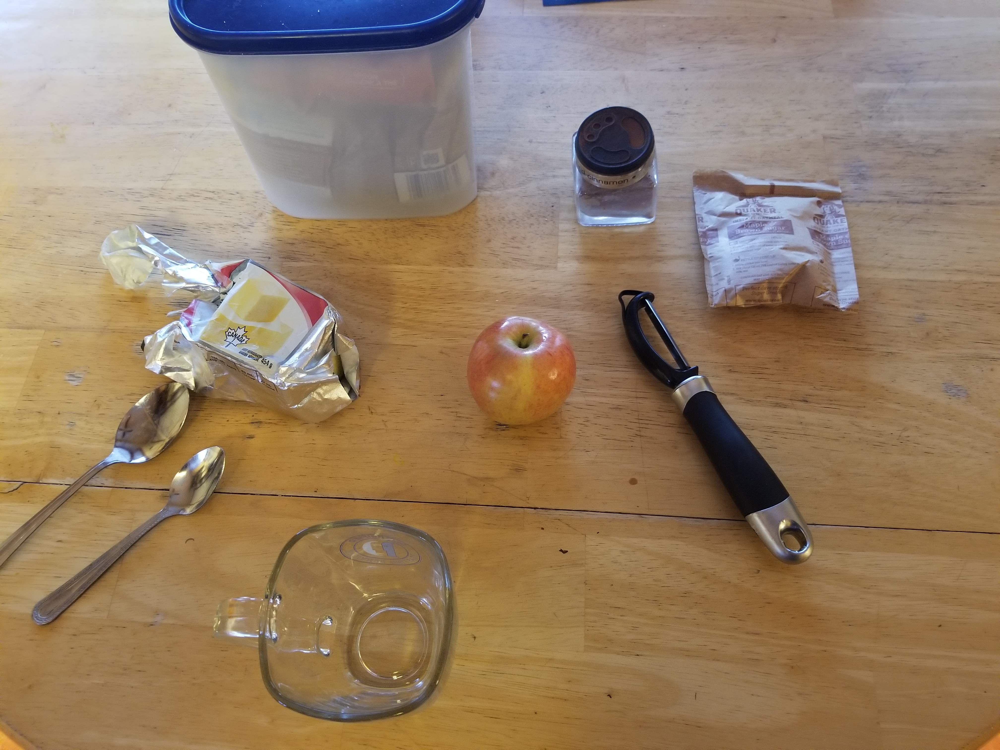
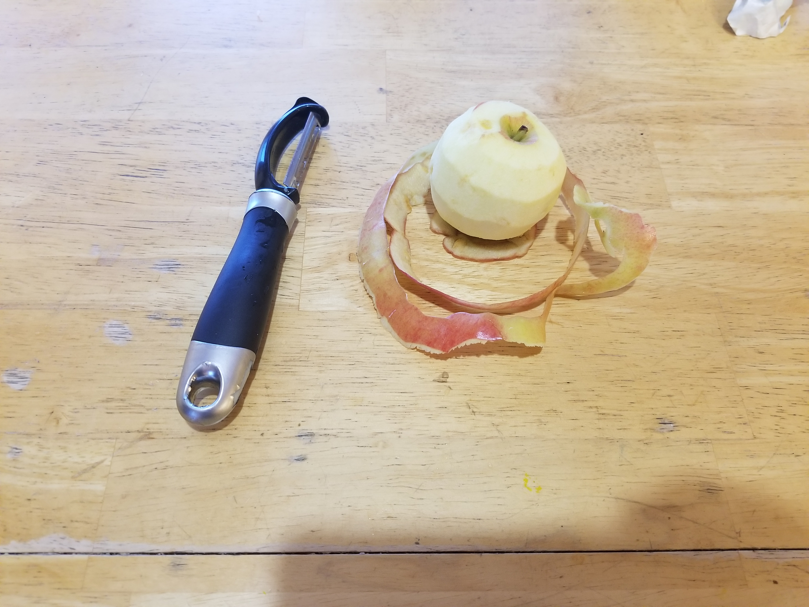
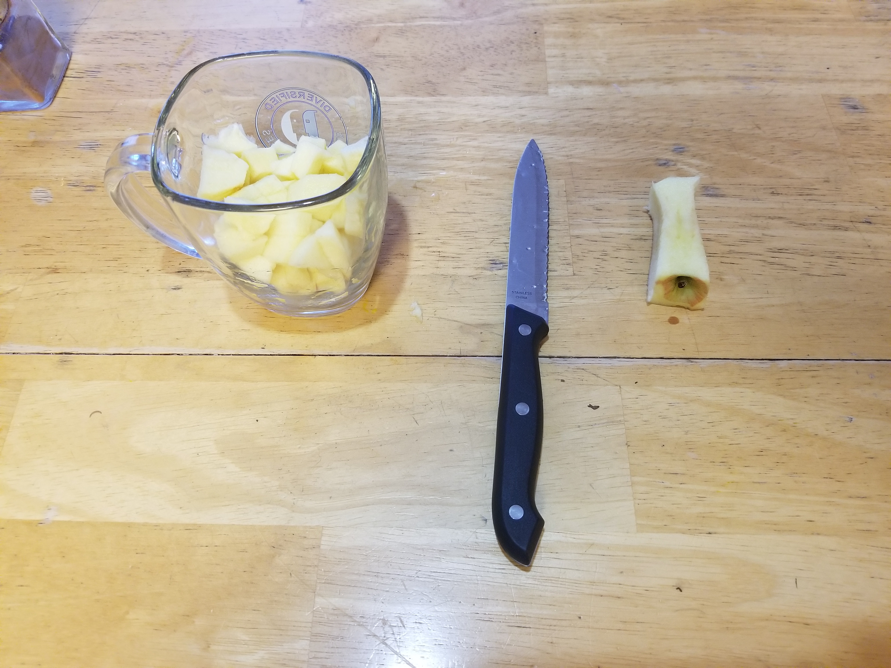
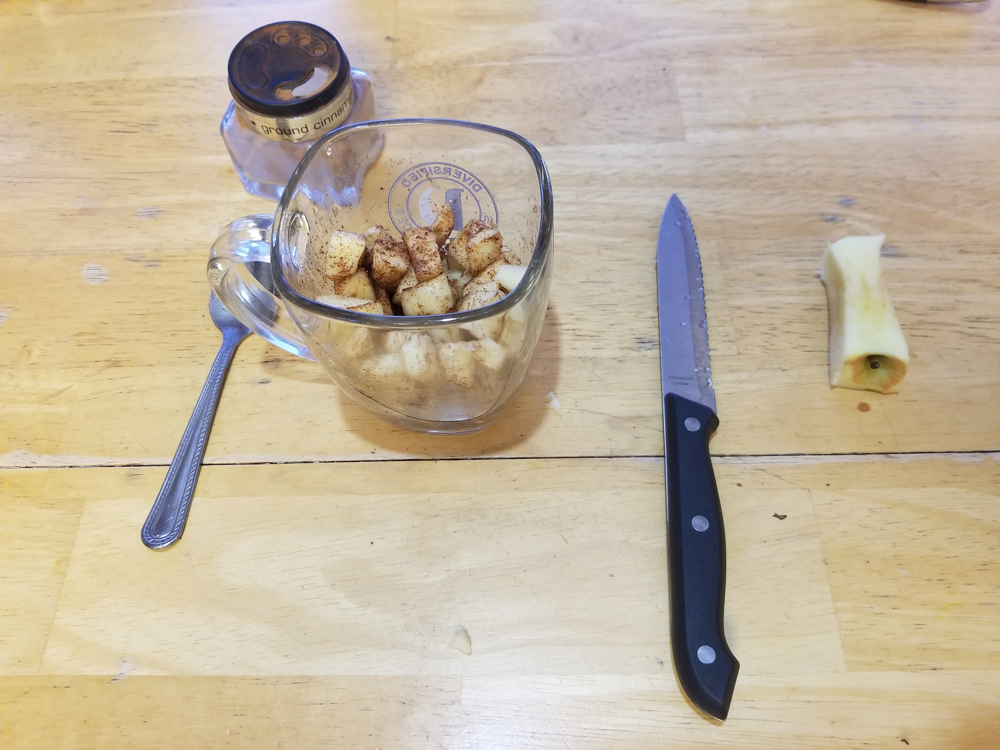
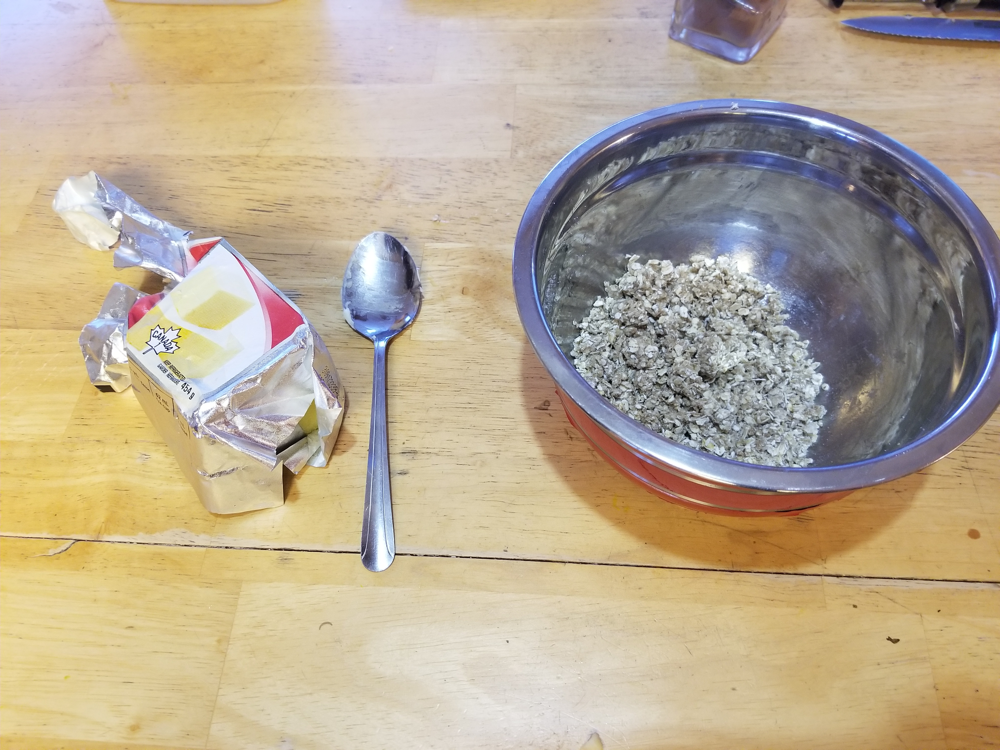
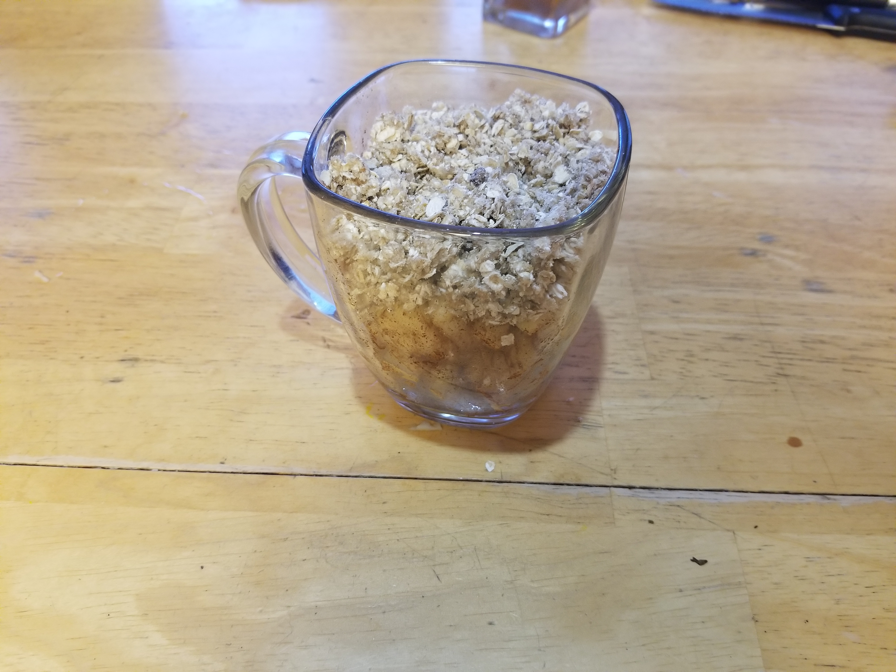
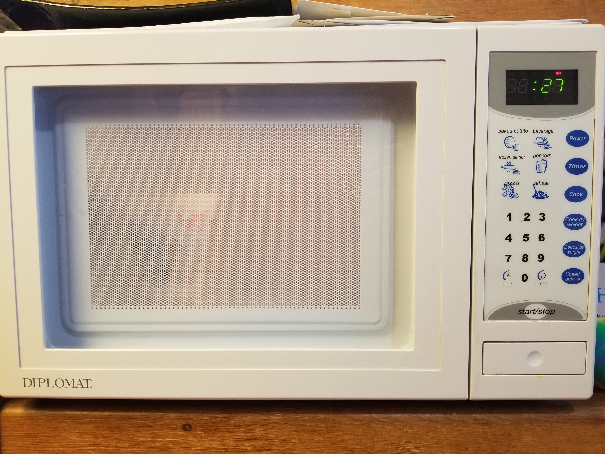
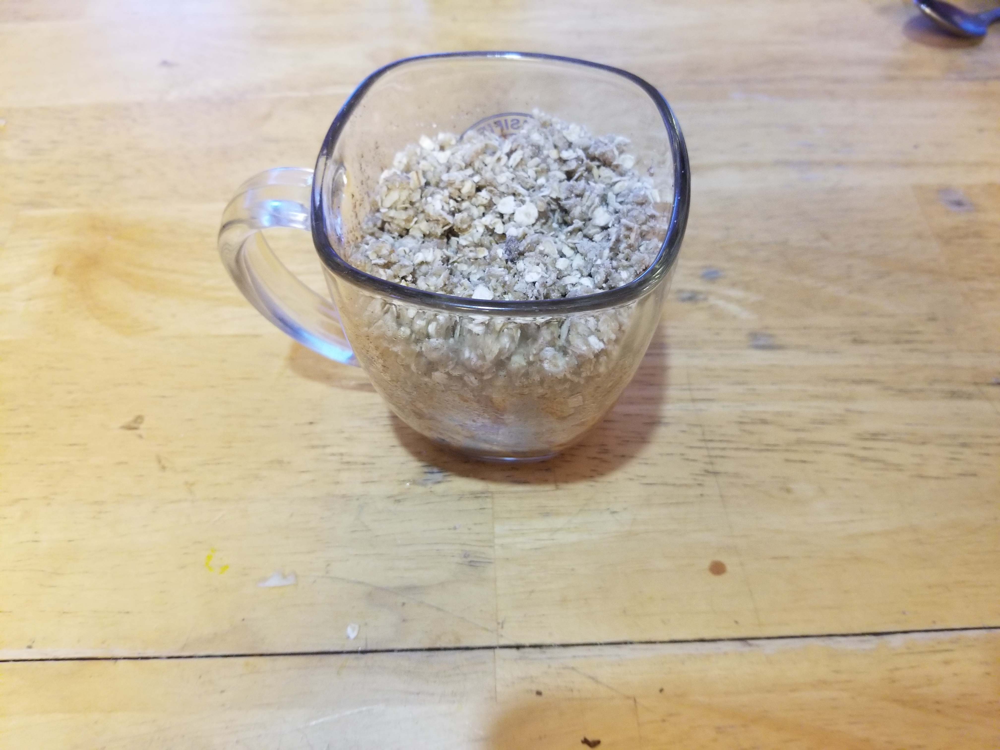
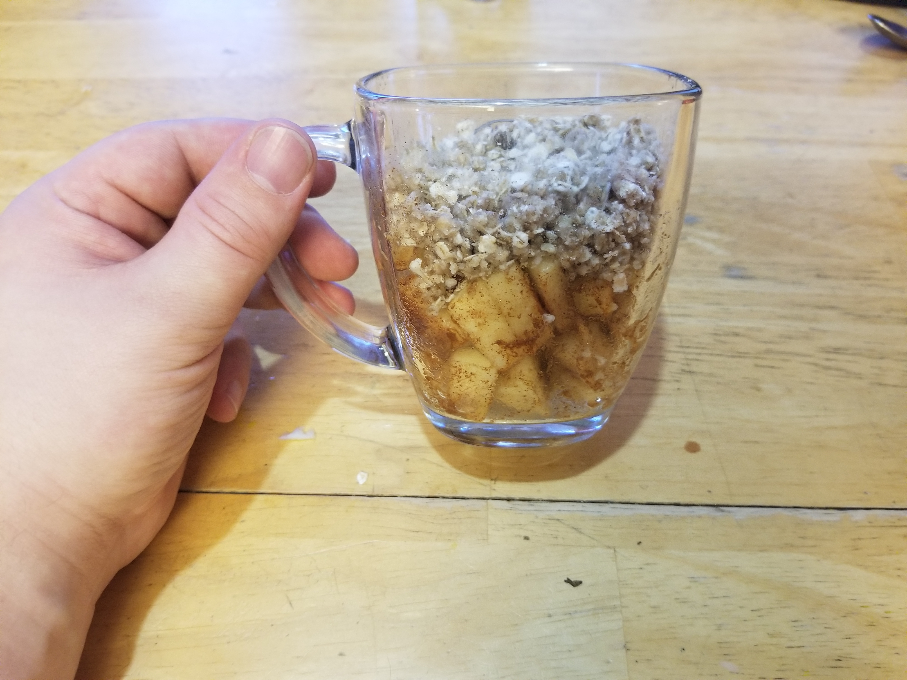

Apple Crisp in a Mug
The following recipe is for Apple Crisp with a twist, in a mug. This is a fast, cheap, and delicious dinner to make for university students to enjoy eating.
Ingredients
- 1 Apple
- 2 TBS Butter
- 1/2 tsp Cinnamon
- 2 TBS Brown Sugar
- 1 pkg instant oatmeal (29 grams)
Steps:

Start:
Start by gathering all your ingredients together.

Step 1:
Peel the apple. Note: A little bit of skin can be left on.

Step 2:
Chop up apple into small chunks. Do not use core. Put apple chunks into mug.

Step 3:
Add Cinnamon to apple chunks in mug. Stir until evenly coated.

Step 4:
Blend together oats, brown sugar and butter in a bowl. Make sure its evenly mixed together.

Step 5:
Place oats mixture ontop of apple chunks in mug.

Step 6:
Microwave mug with ingredients for 1 minute.

Step 7:
Let stand to cool for 3 minutes.

Finish!
Stir in oats with apple and enjoy!